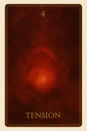
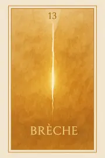
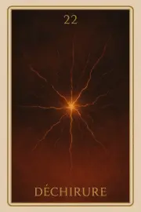
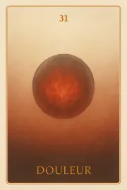
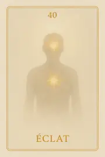
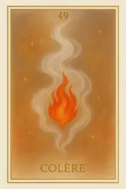
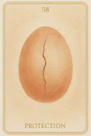
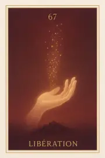
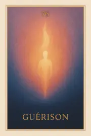

Famille 4 – Sekhmet (Mars)
La quatrième famille de l’Oracle Sia est liée à Mars et à Sekhmet. Elle explore les tensions profondes, les émotions vives, et les luttes intérieures qui marquent le passage de l’âme dans la matière. Chaque carte révèle une force à canaliser, un feu à écouter, une mémoire affective à reconnaître pour permettre à l’âme de se libérer sans se détruire.
Carte 4 – Tension
Mots-clés : Orage intérieur, Déséquilibre émotionnel, Puissance refoulée,
Chiffre caché : 94
Lecture inversée : 9 → 4
Divinité principale : Sekhmet
Planète secondaire : Soleil
Divinité secondaire : Râ
Interprétation de la carte 4 : Tension (droite)
Lecture intuitive rapide
L’âme entre dans une vibration plus vive. Elle ressent une charge intérieure, un orage en formation. C’est l’instant avant la colère, avant le mouvement, où tout est contenu, prêt à éclater. Le 9 (fin) regarde le 4 (structure) : L’âme prend conscience d’un déséquilibre. Quelque chose a été retenu trop longtemps, ou refusé intérieurement. Sekhmet est encore silencieuse, mais sa présence gronde.
1. Caractère de la personne
L’âme ressent une force intérieure qui n’a pas encore trouvé sa forme. Elle est traversée par un orage silencieux, comme une charge accumulée prête à exploser.
2. Plan affectif
Il y a une irritation non exprimée, un écho émotionnel non libéré. L’âme ne sait pas encore si elle est en colère, mais quelque chose la pèse.
5. Plan spirituel
Spirituellement, Tension est le signal d’un déséquilibre ancien. Sekhmet veille, et l’âme doit décider comment transformer cette énergie : en destruction, ou en libération maîtrisée.
Carte 4 : Tension (inversée)
1. Caractère de la personne
L’âme refoule une colère qui finit par l’abîmer intérieurement. Elle nie sa propre violence subtile, et cela la rentre sur elle-même.
2. Plan affectif
La tension se projette vers les autres, même si l’âme ne s’en rend pas compte. Elle blâme silencieusement, ou attend réparation.
5. Plan spirituel
L’âme rejette la leçon contenue dans cette énergie. Elle résiste au feu sacré de Sekhmet, et empêche l’alchimie de s’accomplir.
Résumé de la carte 4 : Tension
TENSION est l’instant de l’orage intérieur, le moment où l’âme perçoit la force en elle comme une charge à libérer. C’est le seuil de la colère, mais aussi le seuil de la puissance maîtrisable.
À l’endroit, l’âme peut transformer cette tension en feu sacré.
À l’envers, elle se laisse consumer ou détourner par elle.
Carte 13 – Brèche
Mots-clés : : Faille intérieure, Ouverture imposée, Feu révélateur, Cassure vibratoire, Passage non choisi
Chiffre caché : 85
Lecture inversée : 5 → 8
Divinité principale : Sekhmet
Planète secondaire : Terre
Divinité secondaire : Geb
Interprétation de la carte 13 : Brèche (droite)
Lecture intuitive rapide
L’âme vient de traverser une tension brûlante. Elle ne sait pas encore ce que cela signifie, mais quelque chose cède. Un point invisible dans l’espace vibratoire s’ouvre sans prévenir. Ce n’est pas un regard, ni un choix. C’est la fente imposée dans le mur de la conscience, l’infiltration d’une lumière brûlante qui la force à sentir ce qu’elle a toujours voulu éviter. La brèche n’est pas encore la compréhension. Elle est le passage forcé, le lieu où l’éternité fend l’instant et fait entrer la mémoire du feu.
1. Caractère de la personne
L’âme ressent l’ouverture soudaine d’un point en elle. Quelque chose s’ouvre sans qu’elle l’ait choisi. La tension passée a laissé une faille, et à travers elle, une vérité entre.
2. Plan affectif
Une onde chaude, presque violente, traverse l’âme. Elle ne comprend pas encore, mais sent que cette faille contient des souvenirs liés à la blessure, au feu, à l’attachement ou à l’agression.
5. Plan spirituel
Spirituellement, la BRÈCHE est le point d’entrée du feu sacré. Sekhmet déchire le voile, non pour punir, mais pour révéler. C’est l’éveil de l’épreuve — l’appel du pardon ou du refus.
Carte 13 : Brèche (inversée)
L’âme refuse de reconnaître ce qui s’ouvre en elle. La faille est là, mais niée, bloquée, ou recouverte d’instincts de défense.
1. Caractère de la personne
2. Plan affectif
L’onde devient douleur sourde. L’âme reste attachée à la colère ou au rôle de victime. Elle perçoit la blessure, mais s’y enferme.
5. Plan spirituel
La lumière cherche à entrer par la brèche, mais l’âme ferme le passage. Elle refuse la vision, refuse le feu. Sekhmet se heurte à un mur intérieur encore trop dur.
Résumé de la carte 13 : Brèche
BRÈCHE est l’instant sacré de rupture. L’âme ne comprend pas encore, mais quelque chose s’ouvre en elle par la force du feu. C’est une cassure vibratoire imposée, non punitive, mais révélatrice.
À l’endroit, elle laisse passer le début d’une guérison par la vérité.
À l’envers, elle refuse le passage, ou s’enferme dans la faille.
Carte 22 – Déchirure
Mots-clés : : Fracture intérieure, Colère enfouie, Faille vibratoire, Tension affective, Lumière sur la blessure
Chiffre caché : 103
Lecture inversée : 3 → 0 → 1
Divinité principale : Sekhmet
Planète secondaire : Jupiter
Divinité secondaire : Amon-Rê
Interprétation de la carte 22 : Déchirure (droite)
Lecture intuitive rapide
L’âme ressent une douleur sourde. Elle ne sait pas d’où elle vient, mais elle sent qu’un feu monte depuis l’intérieur. Ce n’est pas encore une rage, ni un cri, mais une faille vibratoire, un écart entre ce qu’elle est profondément et ce qu’elle a vécu. Sekhmet palpite en elle. Mais elle ne sait pas encore si elle doit se battre, fuir, ou se libérer. Amon-Rê est là, en silence. Sa lumière pousse doucement : ne reste pas dans la déchirure. Traverse.
1. Caractère de la personne
L’âme ressent une cassure intérieure. Quelque chose en elle ne tient plus. Elle le sent.
2. Plan affectif
Une colère ancienne remonte, confuse, peut-être injustifiée. Mais elle révèle une zone blessée.
5. Plan spirituel
Sekhmet gronde doucement. Amon-Rê éclaire le feu sans le juger.
Carte 22 : Déchirure (inversée)
1. Caractère de la personne
L’âme fuit la blessure. Elle préfère se couper encore davantage plutôt que de sentir.
2. Plan affectif
L’âme se referme, se raidit, s’isole. Elle refuse d’exprimer ce qui la déchire.
5. Plan spirituel
Amon-Rê l’invite à traverser la faille. Mais l’âme ne supporte pas encore la lumière qu’il y pose
Résumé de la carte 22 : Déchirure
DÉCHIRURE est le moment où la tension devient fracture. L’âme ressent une colère obscure, une incompréhension brûlante.
À l’endroit, elle accepte de sentir cette faille.
À l’envers, elle se protège et s’enfonce dans le rejet.
Carte 31 – Douleur
Mots-clés : : : Souffrance persistante, Mémoire brûlante, Blessure non refermée, Tension intérieure, Passage par la douleur
Chiffre caché : 112
Lecture inversée : 2 → 1 → 1
Divinité principale : Sekhmet
Planète secondaire : Mars
Divinité secondaire : Sekhmet
Interprétation de la carte 31 : Douleur (droite)
Lecture intuitive rapide
L’âme regarde ce qui brûle encore. Ce n’est plus une émotion. C’est un point chaud, inscrit. Quelque chose en elle refuse de se refermer. Peut-être une blessure subie, peut-être une souffrance infligée. Ce n’est pas le feu de la colère, ni le feu de la purification. C’est un feu qui reste, parce que l’âme n’a pas pu ou n’a pas voulu lâcher. Elle voit le mal qu’on lui a fait, le mal qu’elle a porté, le mal qu’elle a laissé faire. Et cela brûle encore. Parfois, cette douleur cherche à repartir vers l’extérieur. Parfois, elle accroche un vivant. Mais le regard ne juge pas. Il montre. Et l’âme sait.
1. Caractère de la personne
L’âme reconnaît une douleur restée vivante en elle. Ce n’est plus une réaction, mais une mémoire qui cherche encore un passage.
2. Plan affectif
L’âme voit ce qu’elle a souffert et provoqué dans ses liens. La douleur n’est plus une justification : elle devient vérité.
5. Plan spirituel
L’âme ne fuit plus la brûlure. Elle entre dans ce feu pour comprendre ce qu’il contient.
Carte 31 : Douleur (inversée)
1. Caractère de la personne
L’âme s’enferme dans sa douleur. Elle accuse, ou se punit. Rien ne circule : tout reste figé, brûlant, fermé.
2. Plan affectif
La douleur déborde. L’âme s’accroche à un vivant, ou cherche réparation en dehors du cycle.
5. Plan spirituel
L’âme refuse d’entrer dans le feu de sa propre blessure. Alors elle tourne en boucle, et garde la terre comme point d’ancrage.
Résumé de la carte 31 : Douleur
DOULEUR est le moment où l’âme regarde ce qui en elle n’a pas cicatrisé. Elle ne cherche pas d’explication. Elle ressent.
À l’endroit, la douleur devient passage.
À l’envers, elle reste en tension, et peut s’ouvrir vers un attachement nocif aux vivants.
Carte 40 – Eclat
Mots-clés : : Montée intérieure, Feu contenu, Point de rupture, Discernement avant l’action, Vérité ou projection
Chiffre caché : 121
Lecture inversée : 1 → 2 → 1
Divinité principale : Sekhmet
Planète secondaire : Mercure
Divinité secondaire : Thot
Interprétation de la carte 40 : Eclat (droite)
Lecture intuitive rapide
Quelque chose en l’âme est prêt. Mais ce n’est pas encore un cri, ni une libération. C’est une tension claire, une poussée intérieure, un point d’éclat possible. L’âme observe cette montée, non pour l’empêcher, mais pour voir ce qui cherche à sortir. Est-ce une lumière juste ? Ou un fragment encore porté par la colère ? Est-ce un éclat de vérité, ou une blessure prête à rompre ? Sekhmet se tient en retrait. Thot analyse. Ils ne jugent pas. Mais le point d’éclat, s’il est mal vu, peut trancher. L’âme est sur un fil brûlant : elle doit discerner avant de parler, avant d’agir, avant de projeter.
1. Caractère de la personne
L’âme sent une montée intérieure. Elle observe si cet éclat vient d’elle… ou d’un reste de colère.
2. Plan affectif
Un mot, un geste, un souvenir brûlent. Mais l’âme ne réagit pas : elle regarde.
5. Plan spirituel
Un éclat de feu est là, prêt à sortir. L’âme discerne si ce feu est lumière… ou réaction.
Carte 40 : Eclat (inversée)
1. Caractère de la personne
L’âme éclate sans recul. Elle agit depuis la tension, sans l’avoir observée.
2. Plan affectif
Une blessure prend la parole à sa place. Le lien devient champ de feu.
5. Plan spirituel
L’âme confond l’éclat avec la vérité. Elle projette au lieu de transmuter.
Résumé de la carte 40 : Eclat
ÉCLAT est le moment où l’âme sent le feu monter, mais choisit de regarder d’abord.
À l’endroit, elle discerne avant d’agir.
À l’envers, elle projette sans voir.
Carte 49 – Colère
Mots-clés : : Réaction défensive, Feu mal dirigé, Blessure non reconnue, Puissance décentrée, Ajustement intérieur
Chiffre caché : 130
Lecture inversée : 0 → 3 → 1
Divinité principale : Sekhmet
Planète secondaire : Vénus
Divinité secondaire : Hathor
Interprétation de la carte 49 : Colère (droite)
Lecture intuitive rapide
L’âme voit le lieu de sa colère. Pas celle qu’elle a montrée. Celle qu’elle a portée. Celle qui a parlé à sa place. Celle qui l’a fait trancher trop vite, fermer trop tôt, rejeter trop fort. Elle croyait agir. Elle croyait décider. Mais elle réagissait. Sekhmet lui montre la force brûlante, et la blessure enfouie. Hathor lui murmure : « Tu n’as pas été en faute. Mais tu n’as pas aimé depuis la paix. » L’âme regarde alors la racine de ce feu. Et comprend que sa puissance n’était parfois qu’un mouvement de défense. La colère n’était pas la fin. Elle était le masque.
1. Caractère de la personne
L’âme reconnaît ce qui l’a fait réagir. Elle comprend que sa force venait parfois d’un feu mal dirigé.
2. Plan affectif
L’âme voit comment sa colère a blessé au lieu de protéger. Elle cherche maintenant un autre ton.
5. Plan spirituel
L’âme distingue la vraie puissance de la réponse défensive. Elle s’ajuste.
Carte 49 : Colère (inversée)
1. Caractère de la personne
L’âme reste dans la réaction. Elle pense se défendre, mais elle attaque.
2. Plan affectif
L’âme projette sa blessure sur l’autre. Elle coupe ce qu’elle voulait protéger.
5. Plan spirituel
L’âme agit sans conscience de son feu intérieur. Elle prend le rejet pour de la clarté.
Résumé de la carte 49 : Colère
COLÈRE est le moment où l’âme reconnaît la vibration qui l’a fait réagir. Elle voit ce qui brûlait, ce qui criait, ce qui coupait.
À l’endroit, elle comprend.
À l’envers, elle continue à blesser.
Carte 58 – Protection
Mots-clés : : Défense instinctive, Peur dissimulée, Feu de survie, Force intérieure, Acte non digéré
Chiffre caché : 139
Lecture inversée : 9 → 3 → 1
Divinité principale : Sekhmet
Planète secondaire : Saturne
Divinité secondaire : Osiris
Interprétation de la carte 58 : Protection (droite)
Lecture intuitive rapide
L’âme regarde ce qu’elle a défendu. Elle voit les gestes brusques, les silences imposés, les coupures nécessaires… ou non. Elle comprend que souvent, elle a agi pour ne pas être atteinte. Elle a mis la force là où elle sentait le vide. Sekhmet ne la juge pas. Osiris ne la condamne pas. Ils l’accompagnent à travers la mémoire de ses actes. Et l’âme sent, à travers le feu, ce qui était juste, et ce qui était peur.
1. Caractère de la personne
L’âme reconnaît ce qu’elle a tenu pour ne pas s’effondrer. Elle honore sa force sans s’y enfermer.
2. Plan affectif
L’âme voit les gestes qu’elle a posés pour se protéger dans le lien. Elle relâche les défenses devenues inutiles.
5. Plan spirituel
L’âme comprend que la violence n’était pas un échec. C’était un feu de survie. Elle peut maintenant le transmuter.
Carte 58 : Protection (inversée)
1. Caractère de la personne
L’âme agit encore depuis la peur. Elle confond protection et attaque.
2. Plan affectif
L’âme croit protéger… mais elle coupe. Le lien est fermé avant d’être vu.
5. Plan spirituel
L’âme affirme une vérité défensive. Elle impose pour ne pas être traversée.
Résumé de la carte 58 : Protection
PROTECTION est le moment où l’âme regarde la force qu’elle a mobilisée.
À l’endroit, elle reconnaît un feu sacré.
À l’envers, elle sent une défense non digérée.
Carte 67 – Libération
Mots-clés : : Dépôt du feu, Guérison vibratoire, Colère transmutée, Détachement intérieur, Équilibre restauré
Chiffre caché : 148
Lecture inversée : 8 → 4 → 1
Divinité principale : Sekhmet
Planète secondaire : Uranus
Divinité secondaire : Maât
Interprétation de la carte 67 : Libération (droite)
Lecture intuitive rapide
L’âme dépose ce qui l’a consumée. Ses colères, ses blessures, ses élans de feu. Ce n’est plus le moment de les contenir, ni de les justifier. Elle ne s’accroche plus à ce qui a brûlé en elle. Elle libère. Sekhmet ne la juge pas. Elle observe si l’âme a été capable d’aller jusqu’au bout du feu. Saturne soutient la rigueur du geste. Maât veille, silencieuse. L’âme ne se condamne pas. Elle choisit de remettre au cœur de la balancela vérité de ce qu’elle a traversé. Sans haine. Sans honte. Juste ce qui a été vécu.
1. Caractère de la personne
L’âme reconnaît ce qui l’a fait brûler. Elle dépose ces feux sans s’y attacher.
2. Plan affectif
L’âme libère ceux qu’elle a blessés ou retenus par colère. Elle ne cherche plus à avoir raison.
5. Plan spirituel
L’âme remet ses blessures dans la balance. Elle choisit de ne plus les faire peser.
Carte 67 : Libération (inversée)
1. Caractère de la personne
L’âme retient encore la colère. Elle croit qu’elle en a besoin pour exister.
2. Plan affectif
L’âme garde des liens par rancune ou domination. Le feu n’a pas été offert à la lumière.
5. Plan spirituel
L’âme refuse de déposer ce qui l’a détruite. Elle nourrit encore les braises du passé.
Résumé de la carte 67 : Libération
LIBÉRATION est le moment où l’âme dépose dans la balance ce qu’elle a porté de plus brûlant.
À l’endroit, elle remet au feu ce qui ne demande plus à être gardé.
À l’envers, elle retient la flamme, au risque de se consumer à nouveau.
Carte 76 – Guérison
Mots-clés : : : Feu transmuté, Libération karmique, Force apaisée, Intégration des blessures, Guérison incarnée
Chiffre caché : 157
Lecture inversée : 7 → 5 → 1
Divinité principale : Sekhmet
Planète secondaire : Planète inconnue
Divinité secondaire : Sia
Interprétation de la carte 76 : Guérison (droite)
Lecture intuitive rapide
Ce que l’âme regarde ici n’est pas une blessure. C’est le feu qui a traversé toutes ses vies. Le feu qui défend, le feu qui détruit, le feu qui impose, le feu qui brûle pour survivre. Sekhmet, en elle, a frappé mille fois. Et mille fois, l’âme a cru devoir se battre pour exister. Mais aujourd’hui, il ne reste rien à défendre. La flamme ne monte plus pour tuer. Elle s’élève pour transmuter. La guérison ici n’est pas un retour à la paix. C’est une confrontation nue avec tout ce qui a été traversé, sans se détourner, sans justifier, sans accuser. Et parce que l’âme ne détourne plus le regard, le feu se purifie lui-même. Si cette guérison est vraie, elle libère de toutes les incarnations anciennes. Sinon, le feu continue — dans d’autres vies.
1. Caractère de la personne
L’âme reconnaît sa force sans violence. Elle n’a plus besoin de s’imposer.
2. Plan affectif
L’âme n’attaque plus pour ne pas être blessée. Elle ne fait plus mal par peur d’avoir mal.
5. Plan spirituel
L’âme transmute ses feux anciens. La guérison est complète, profonde, totale.
Carte 76 : Guérison (inversée)
1. Caractère de la personne
L’âme reste accrochée à ses luttes anciennes. Elle confond force et tension.
2. Plan affectif
La blessure est encore vive. L’âme continue de blesser pour se protéger.
5. Plan spirituel
Le feu n’est pas encore purifié. L’âme reviendra affronter ce qu’elle refuse encore.
Résumé de la carte 76 : Guérison
GUÉRISON est la transmutation du feu dans toutes les incarnations.
À l’endroit, le feu devient lumière.
À l’envers, l’âme reste prise dans ses anciennes luttes.